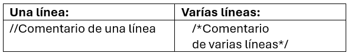
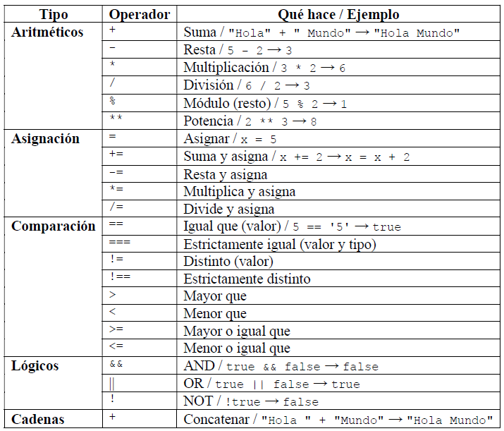

Unidad III: JavaScript
JavaScript, conocido también como JS, es un lenguaje de programación que se utiliza principalmente para crear páginas web interactivas y dinámicas. Permite a los desarrolladores agregar funcionalidades como animaciones, actualizaciones de contenido en tiempo real, menús desplegables, formularios interactivos y mucho más. Aunque se llama JavaScript, no debe confundirse con Java; son lenguajes diferentes con propósitos distintos.
Si HTML es el esqueleto y CSS es la piel o apariencia, JavaScript es el cerebro que permite que las cosas interactúen y funcionen. Gracias a este lenguaje puedes hacer que un botón muestre una alerta, que un formulario envíe datos sin recargar la página, o que cambie el contenido cuando mueves el mouse.
>
Principales Características de JS:
- Lenguaje del lado del cliente: se ejecuta directamente en el navegador del usuario.
- Orientado a objetos: aunque no sea 100% orientado a objetos como otros lenguajes, JS te permite trabajar con objetos.
- Tipado débil: no tenés que especificar el tipo de dato (número, string, etc.) al declarar variables.
- Interpretado: no necesita compilación; el navegador se encarga de ejecutarlo al vuelo.
¿Cómo usar JS en HTML?
Existen tres formas de incluirlo en un documento HTML:
Poco común, puede bloquear el renderizado
<script>
console.log("Código desde el head");
</script>
Antes del cierre de body
<script>
console.log("Código desde el body");
</script>
Mejor práctica, separa el código JS del HTML
En el HTML (al final del <body>):
<script src="./practica.js"></script>
Crear el archivo practica.js:
console.log("Código desde archivo externo");
Salidas en pantalla
Activar las herramientas de desarrollo (Ctrl+Shift+J)
console.log("Hola")
alert("Hola")
En el HTML:
<p id="salida"></p>
En el JS:
document.getElementById("salida").innerHTML = "Texto en la página";
Comentarios en JS:
Variables y constantes
Declaración:Existen tres maneras de declarar variables: var, let y const.
- var → Forma antigua de declarar variables. Tiene alcance de función y permite volver a declarar la misma variable. Hoy casi no se recomienda porque puede generar errores difíciles de detectar.
- let → Forma moderna de declarar variables que sí pueden cambiar su valor. Tiene alcance de bloque (solo existe dentro de { } donde fue declarada). Es la más usada actualmente.
- const → Se utiliza para declarar constantes, es decir, valores que no cambian después de asignarlos. También tiene alcance de bloque.
Ejemplos: var nombre = "Juan"; let edad = 30; const PI = 3.1416;
- Las variables empiezan con una letra, guion bajo (_) o signo de dólar ($).
- Son case sensitive, o sea que nombre y Nombre son diferentes.
- Se usa camelCase para variables compuestas (primerNombre).
Tipos de datos en JS
Primitivos:- String → texto entre comillas. Ej: "Hola", 'JavaScript'.
- Number → números enteros o decimales. Ej: 25, 3.14.
- Boolean → valores lógicos. Solo pueden ser true o false.
- Undefined → cuando una variable fue declarada pero no tiene valor asignado.
- Null → representa un valor “vacío” intencional.
- Symbol → valor único e inmutable (usado en programación avanzada).
- BigInt → para números muy grandes que exceden el límite de Number.
- Object → colecciones de datos más complejos. Incluye arrays, funciones, objetos literales, etc.
Operadores en JS
Ejemplo: Cambiar el texto de un párrafo al hacer clic en un botón.
Para realizar el código de este ejemplo es importante que tengas en cuenta que cuando abrimos una página web, el navegador crea un árbol de objetos llamado DOM (Document Object Model). Ese árbol tiene etiquetas (<h1>, <p>, <div>, etc.) y todo lo que aparece en el HTML. Podemos acceder y manipular ese árbol a través del objeto document. Con document podemos:
- Buscar elementos de la página → document.getElementById("titulo");
- Cambiar el contenido → document.getElementById("titulo").innerHTML = "Nuevo título";
- Modificar estilos → document.body.style.backgroundColor = "lightblue";
- Crear elementos nuevos →
let nuevo = document.createElement("p");
nuevo.textContent = "Soy un párrafo nuevo";
document.body.appendChild(nuevo);
Colocaremos el atributo id para identificar los elementos de la página, de manera que el HTML quedaría así:
<h1>Ejercicio: Modificar texto al presionar un botón</h1>
<p id="texto">Texto original</p>
<button id="btntexto">Haz clic</button>
Mientras que en el JS crearemos una variable para buscar el botón en la página:
let boton = document.getElementById("btntexto");
boton.addEventListener("click", function() {
document.getElementById("texto").innerHTML = "Texto modificado";
});
Con addEventListener agregamos el evento clic, de manera que cuando el usuario haga clic en el botón, se ejecutará la función contenida entre las llaves, la cual consiste en buscar el párrafo y modificar su contenido.
Ejercicios:
- Crear un contador que se incremente cada vez que el usuario haga clic en un botón.
- Crear un contador que disminuya en 1 cada vez que se haga clic en un botón, empezando desde 10.
- Cambiar el color de fondo de la página cada vez que el usuario haga clic en un botón.
- Crear un botón que permita mostrar u ocultar un texto en la página.
- Cambiar el texto de un botón al hacer clic en él.
- Sumar dos números cuando el usuario hace clic en un botón.
- Crear un contador que aumente su valor automáticamente cada segundo, hasta un máximo de 10.